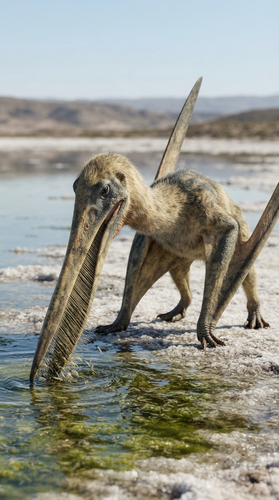
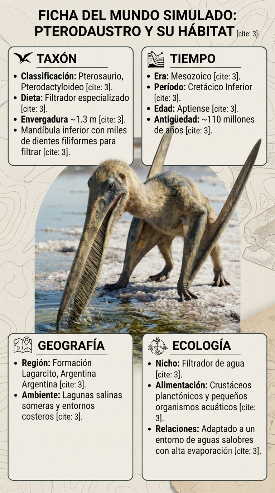
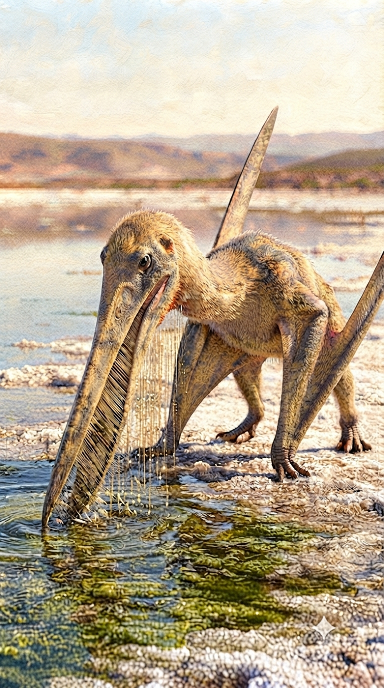

Paleoficha de Pterodaustro



Periodo: Cretácico Inferior (Albiense)
Edad: Hace aproximadamente 105 millones de años.
Dieta: Filtrador microfágico.
Distribución: Formación Lagarcito, San Luis (Argentina).
TAXÓN:
Pterodaustro guinazui
CLADO:
Ctenochasmatidae (Pterosauria)
DIETA:
Filtrador microfágico mediante cientos de dientes finos en la mandíbula inferior.
TAMAÑO:
Envergadura alar aproximada de 2,5 metros.
LOCOMOCIÓN:
Vuelo activo y desplazamiento cuadrúpedo sobre tierra firme.
TIEMPO:
Cretácico Inferior (Albiense), hace aproximadamente 105 millones de años.
GEOGRAFÍA:
Formación Lagarcito, San Luis (Argentina).
EQUIVALENCIA PALEOGEOGRÁFICA:
Cuencas endorreicas situadas en el margen de Gondwana.
AMBIENTE PALEOECOLÓGICO:
Lagunas alcalinas poco profundas con gran abundancia de plancton y pequeños crustáceos.
ECOLOGÍA:
• Flora: Vegetación xerófila en las orillas y tapetes microbianos lacustres.
• Fauna secundaria: Ostrácodos, peces pequeños y otros pterosaurios.
• Nicho: Filtrador especializado comparable ecológicamente a los flamencos modernos.
• Relaciones: Ejemplo excepcional de especialización alimentaria dentro de los pterosaurios.
CLIMA:
Wm2 (Semiárido). Cálido, con fuerte estacionalidad y elevada evaporación.
ESTADO ECOLÓGICO:
Estable. Pterodaustro constituye uno de los casos más sorprendentes de adaptación filtradora entre los reptiles voladores, gracias a su extraordinaria dentición especializada.
Vídeo PalEntropía:
▶ Ver Short en YouTube